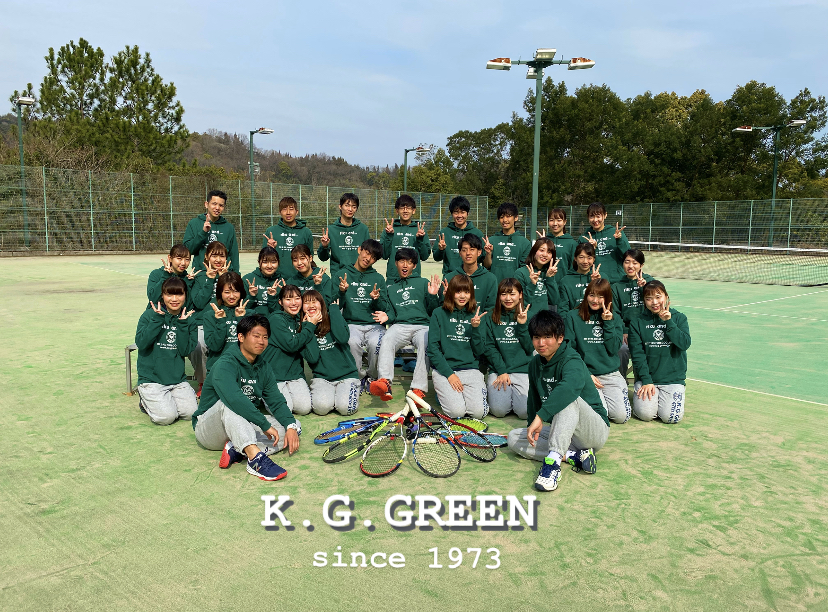

/グリーンテニスクラブ同好会”K.G.GREEN”
私たちK.G.GREENは1973年設立の関学生オンリーのテニスサークルです！
活動日は月〜金曜日の3,4限後で、その中から週2回自分の好きな曜日に参加する形です✨
年2回の合宿のほかに、対抗戦（関学の他のサークルとの団体戦）や部内戦🎾、クリスマスパーティー🎄、学祭出店🏮、様々なコンパ企画など楽しい行事が盛り沢山！🤩🤩
テニスも遊びもサークルで楽しみたい！ってそこのあなた！👀
ぜひK.G.GREENに遊びに来てみてください‼️
（現在、コロナの影響により新歓活動は停止しております。これからの予定はツイッターやインスタで発信していきます📣）
関学公認テニスサークルhttps://t.co/qKCSAw1Be3です🎾
— 関学公認テニスサークル GREEN (@K_G_GREEN) April 4, 2020
グリーンはテニスも遊びも全力💯
年2回の合宿のほかにたくさんのコンパ企画も…🤩
グリーンで最高の大学生活を送りませんか⁉️
（現在コロナの影響により新歓はストップしていますが、随時SNSで発信していきます📣）#kg_green #ようこそ関学へ pic.twitter.com/ztVqWsOuut
/活動日
月〜金曜日の3,4限後（この中から好きな曜日で週2回の参加）
/所属人数
33人
/オンライン新歓
未定ですがオンライン新歓ももしかしたらやるかもしれません😅（検討中）各種SNSをご確認ください！